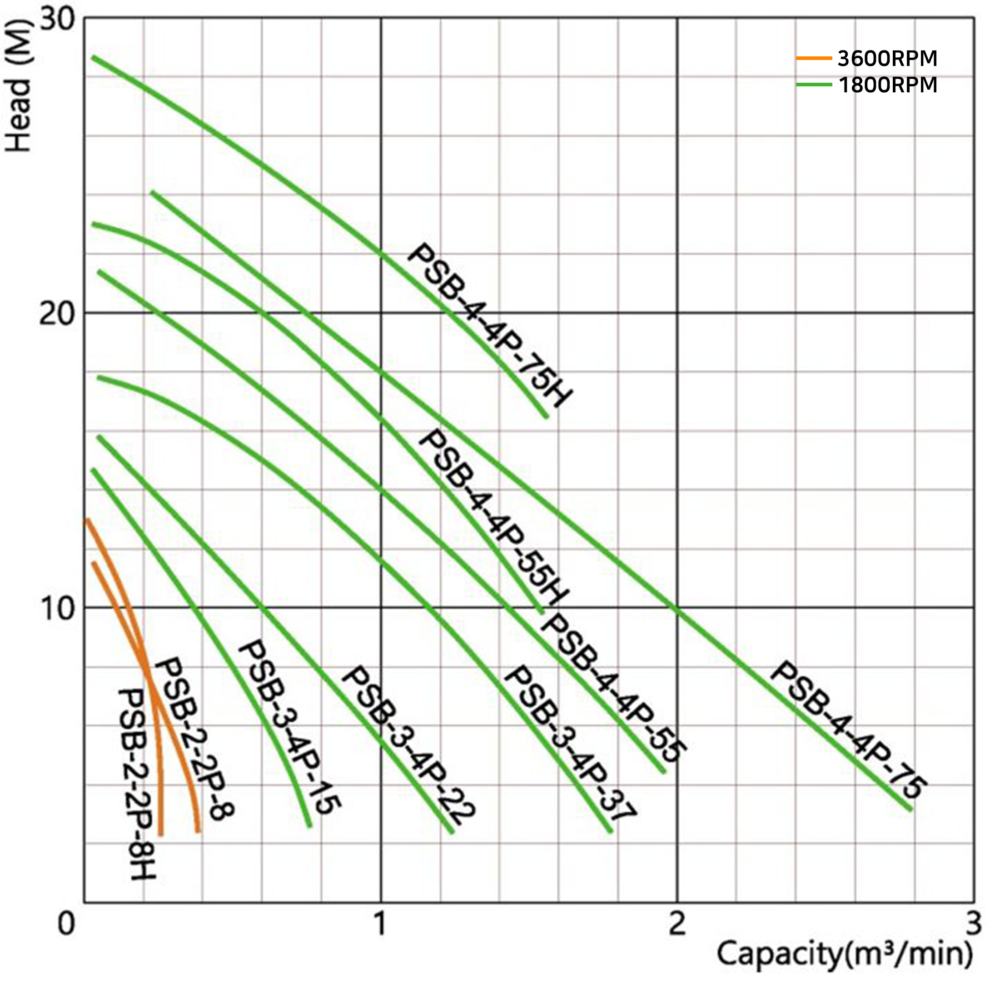
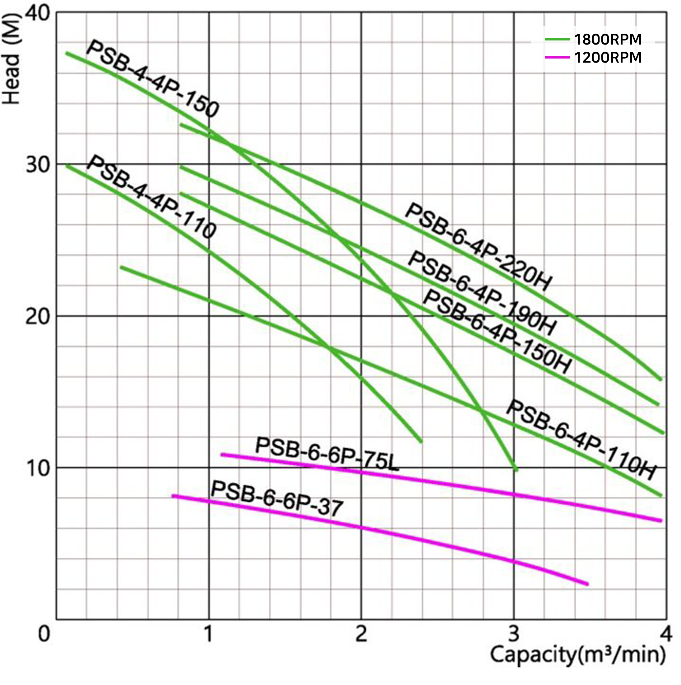
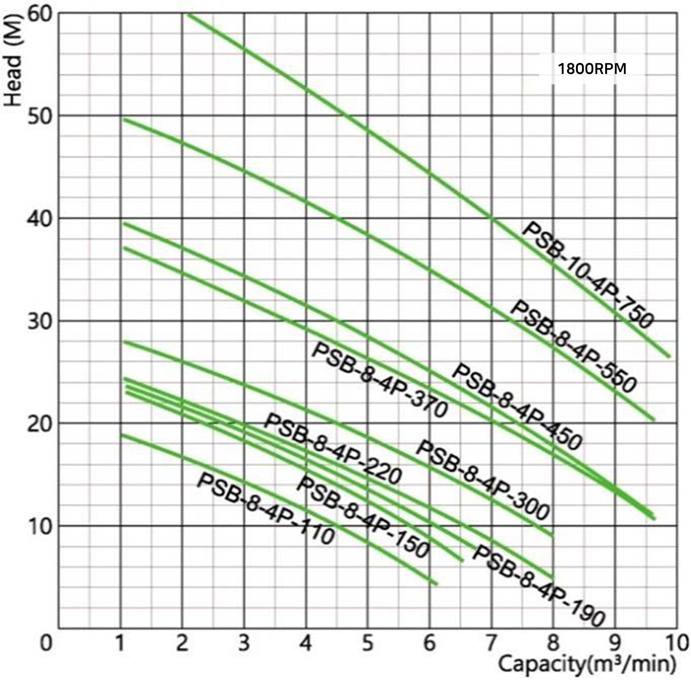
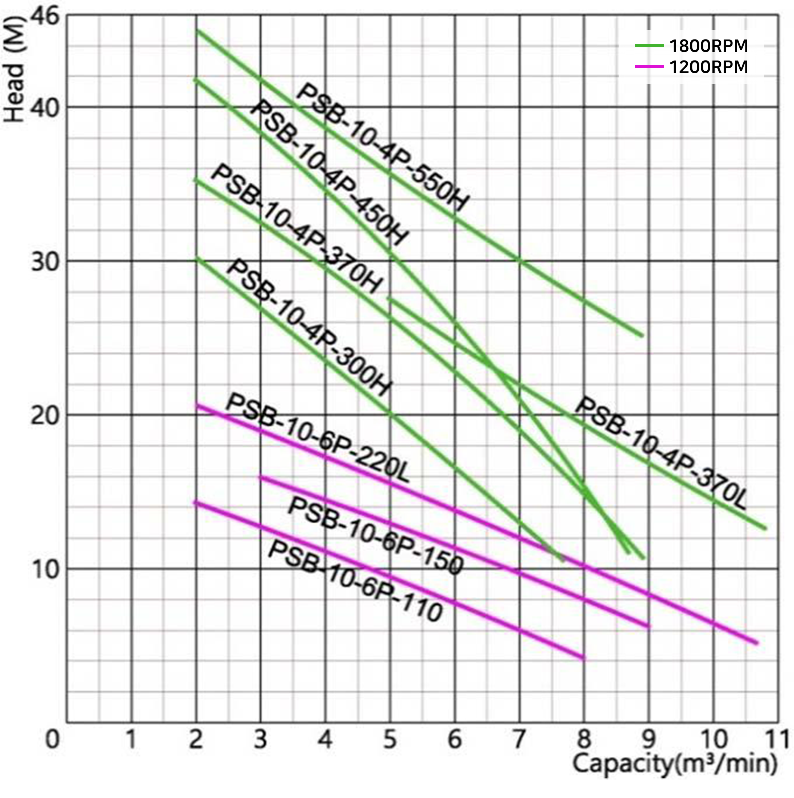

수중 펌프 대용량 이송 펌프(Submersible Large Capacity Pumps) 용도 배수용 농업용 양수장 특징 농업용수 및 배수장의 빗물 이송 강물, 저수지등의 대용량 이송 대용량 배수장의 빗물 이송 성능곡선도 (Performance Curve)     조립단면도 (Sectional Drawing) 조립단면도 (Sectional Drawing) 외형치수도 (Outline Drawing and Size) Automatic Detachment